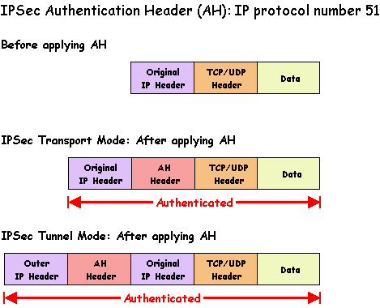
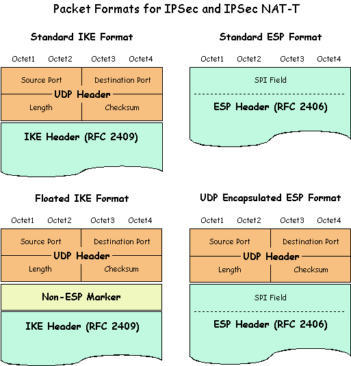
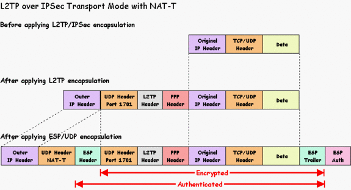
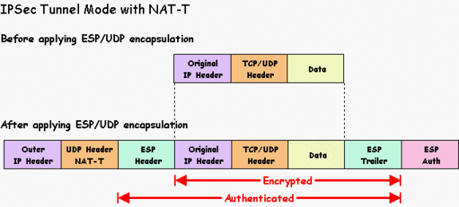
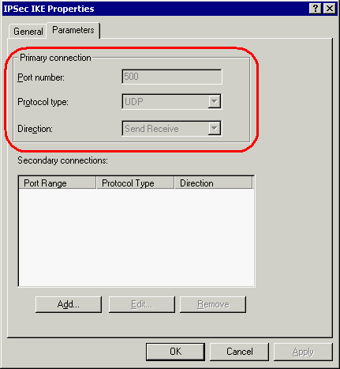
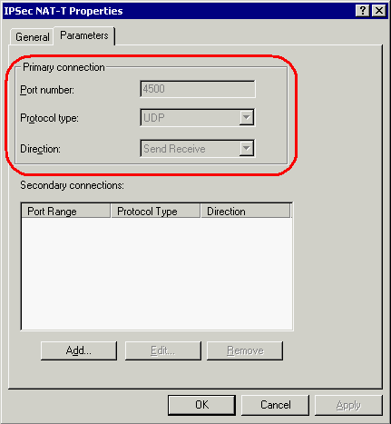
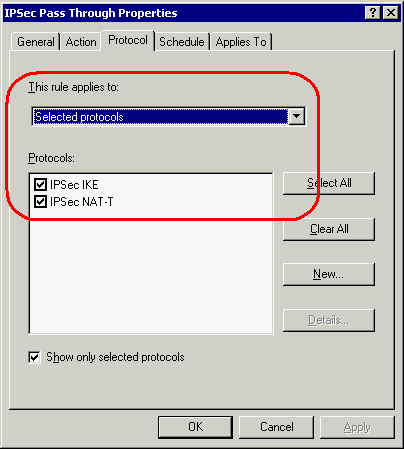
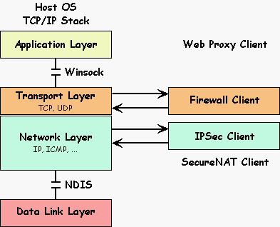
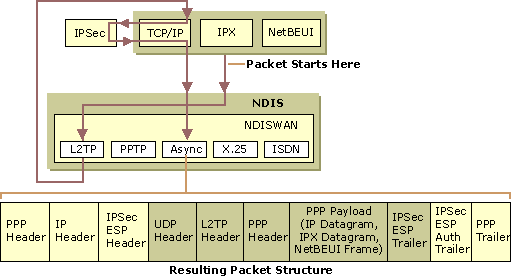

How to pass IPSec traffic through ISA Server
By Stefaan Pouseele
April 2003
Last Update: 26/03/2005
1. Summary
A topic that frequently comes up on the message boards is how to configure ISA Server for IPSec passthrough. Although ISA Server supports PPTP passthrough out of the box, there is no built-in support for IPSec passthrough. The reason for this is that the IPSec protocols are not NAPT (Network Address & Port Translation) compatible. The IPSec protocols are designed to authenticate and/or encrypt information in the packet. When a NAPT device (i.e. an ISA server) tries to change the information in the packet, it will either cause the packet to be considered invalid by an IPSec protocol, or it will be unable to perform the translation because information the NAPT device needs to access is encrypted.
Lucky for us, the IETF (Internet Engineering Task Force) has fixed the problem at last. The IPSec Working Group has worked out a solution called NAT Traversal or in short NAT-T. As from january 2005 the solution is fully standarized in the RFC's 3947 and 3948. The only problem left is that not all vendors have implemented the latest version of the RFC's yet, but rather some early version of the drafts, mostly version 2 and 3. Therefore, you can expect some small variations in the different implementations. This might result in some interoperability problems if you want to mix and match implementations from different vendors.
2. IPSec NAT Traversal
It is a well-known fact that the IPSec protocol was not designed with NAPT (Network Address & Port Translation) in mind. The use of the IPSec protocol is usual not a problem in a gateway-to-gateway VPN scenario, because the VPN gateways are placed on the border of the networks to be connected. However, one very popular use of VPNs is to provide telecommuter access to the corporate Intranet. Today NAPTs are widely deployed in home gateways, as well as in other locations likely to be used by telecommuters. The result is that the IPSec-NAPT incompatibilities have become a major barrier to deploy the IPSec protocol in a client-to-gateway VPN scenario.
It is not within the scope of this article to describe the exact technical details of the known incompatibilities between NAPT and the IPSec protocol. If you are interested in that level of detail, you should read the IETF Informational RFC 3715 IPsec-NAT Compatibility Requirements written by Bernard Aboba and William Dixon of Microsoft.
It is a pity that the two excellent Microsoft Technet Webcasts "IPsec and NAT-T : Finally in Harmony? (Level 400)" and "Demystifying IPsec (Level 400)" given by Steve Riley are no longer available on the Microsoft Webcast site. However, on Steve Riley's website you should be able to find the excellent powerpoint presentation IPsec and NAT: Finally in harmony.
To enable the deployment of the IPSec protocol in a client-to-gateway VPN scenario, the IETF has finally worked out a solution called NAT Traversal. Since one of the primary uses of IPSec is remote access to corporate Intranets, a NAT-T solution must support the traversal of a NAPT device via either IPSec tunnel mode or L2TP over IPSec transport mode. This includes support for traversal of more than one NAPT device between the remote client and the VPN gateway. The key elements of the NAT Traversal solution are:
- The use of the IPSec AH protocol is not supported.
- The negotiation of the NAT Traversal in the IKE.
- The UDP Encapsulation of IPSec Packets.
2.1. The use of the IPSec AH protocol is not supported
The purpose of AH is to protect immutable fields within the IP header (including IP addresses). However, a NAPT device translates IP addresses, invalidating the AH integrity check. As a result, NAPT and AH are fundamentally incompatible and there is no requirement that an IPsec-NAT compatibility solution has to support AH transport or tunnel mode.

Note: the mutable fields within the IP header are Type of Service (TOS), Fragment Offset, Flags, Time to Live (TTL), IP header checksum.
2.2. The negotiation of the NAT Traversal in the IKE
The IETF RFC 3947 Negotiation of NAT-Traversal in the IKE describes how to detect the support for NAT Traversal in the IPSec hosts, how to detect one or more NAPT devices along the path, and how to negotiate the use of UDP encapsulation of the IPSec packets through the NAPT boxes. This is done by defining some changes and extensions to the Internet Key Exchange (IKE) protocol. To better understand what is happening behind the scene, let us walk through the negotitiation process from a communication point of view.
The VPN client (the initiating IPSec peer) starts the IKE negotiation as usual with a destination the IP address of the VPN gateway (the responding IPSec peer) and the well-known port UDP 500. Because a NAPT device along the path may change the IKE UDP source port, the recipient must be able to process IKE packets whose source port is different than UDP 500, the default source port. This implies also that the responder must send all replies back to the same source IP address and UDP port number of the received IKE packet.
It is important that the presence of a NAPT device along the path is detected in the very beginning of the IKE negotiation process. This is done in two steps:
- The first step is to detect that the IPSec peers are capable of performing NAT-T. Each IPSec NAT-T capable peer must add a new Vendor-ID (VID) payload to the first IKE message (Security Association), containing a well-known hash value. Only if both the initiator and the responder have sent and received that specific VID payload, the NAT Traversal probe will continue. In all other cases, normal IPSec negotiations and IPSec protection is performed.
- The second step is to add one or more new NAT-Discovery (NAT-D) payloads to the second IKE message (Key Exchange). Each NAT-D payload contains a hash value of an IP address and UDP port number. During Main Mode negotiation each IPSec peer sends two NAT-Discovery payloads, one for the destination IP address and UDP port number (default 500), and one for the source IP address and port number (default 500). By comparing the hash of the real source IP address and UDP port number of the received IKE message with those sent within the NAT-D payload, each recipient can determine if there is a NAPT device along the path and which peer is located behind a NAPT device. If at least one NAPT is detected, then the IPSec peers automatically use IPSec NAT-T to send IPSec-protected traffic across a NAPT device. In all other cases, normal IPSec negotiations and IPSec protection is performed.
As soon as the use of IPSec NAT Traversal is negotiated, the IKE traffic will move to a new UDP port number, the IKE Header will change to a Floated IKE Header format and the peer behind a NAPT device will start sending NAT-keepalive packets. Because these are three very important changes, let us examine them in more detail.
The primary goal of the IPSec NAT Traversal is to have a generic NAPT transparent solution. It is common knowledge that there exist on the market some IPSec-aware NAPT devices. They use some vendor specific hacks to enable IPSec traffic through their own devices. However, by doing that they are interfering with the regular IKE traffic on UDP port 500. Because a generic solution can not discover the capabilities of any NAPT device, the designers of the IPSec NAT Traversal protocol have chosen to simply move the IKE traffic off UDP port 500 to avoid any problems with the IPSec-aware NAPT devices. Therefore, as soon as the use of IPSec NAT-T is negotiated, the new UDP port 4500 must be used. Take note that any implementation that supports NAT Traversal, must also support IKE negotiations that starts on UDP port 4500 instead of the default UDP port 500. Of course, if a negotiation begins immediately on UDP port 4500, then no port change is needed anymore.
In addition to the UDP port change, the IKE data must be prepended with a Non-ESP Marker that allows a recipient to distinguish between an IKE message and a UDP encapsulated ESP packet. The Non-ESP Marker is nothing more than 4 octets of zero (x'00'). This aligns nicely with the SPI field of a UDP encapsulated ESP packet. This new format is called Floated IKE Header format and is illustrated in the figure below.

The sole purpose of sending NAT-keepalive packets is to keep the UDP mappings in a NAPT device alive for the duration of a connection between the IPSec peers. The NAT-keepalive packet is a standard UDP message that uses the same UDP port 4500 as the IKE traffic, and contains a single octet (0xFF) as payload. The default NAT-keepalive interval is set to 20 seconds of inactivity on a given connection. Take note that no NAT-keepalive packets are sent on UDP port 500.
2.3. The UDP Encapsulation of IPSec Packets
The IETF RFC 3948 UDP Encapsulation of IPsec Packets defines methods to encapsulate and decapsulate IP Encapsulating Security Payload (ESP) packets inside a UDP packet for the purpose of traversing NAPT. The UDP encapsulation is used whenever negotiated using the Internet Key Exchange (IKE) protocol.
The most important point here is the insertion of a standard UDP header between the IP and the ESP header as indicated in the above figure. The UDP port numbers must be the same as those for the IKE packets after the IPSec NAT Traversal is negotiated (UDP port 4500). That means that the IKE and the UDP encapsulated ESP packets use the same UDP port numbers. As already mentioned, to distinguish between an IKE packet and a UDP encapsulated ESP packet, the recipient must check the first 4 octets immediately following the UDP header to demultiplex the traffic. If they are all zero it is an IKE packet (Non-ESP Marker), otherwise it is a UDP encapsulated ESP packet. Therefore, the value of the SPI (Security Parameters Index) field in the ESP header must always be different from zero.
It is worth mentioning that the UDP checksum in the UDP-encapsulated ESP header, the Floated IKE header and the NAT-keepalive Header should be transmitted as a zero value. However, the receiver must not depend upon the UDP checksum being a zero value. That seems to indicate that the receiving IPSec peer should not check the UDP checksum value for those packets.
Since one of the primary uses of IPSec is a client-to-gateway VPN scenario, the NAT Traversal solution supports explicitely the L2TP over IPSec in transport mode and the IPSec tunnel mode implementations. Let us now briefly look at the complete packet structure for those two cases:

Note: a typical example of the above implementation is the Microsoft L2TP/IPSec VPN client. For more information about the Microsoft VPN solutions, check out the Microsoft VPN site.

Note: it is not within the scope of this article to discuss the pros and cons of both implementations. However, keep in mind that although the IPSec tunnel mode packet structure looks simple, it is not necessary a better solution for a client-to-gateway VPN scenario.
3. Configuring ISA Server
Now that we understand how the IPSec NAT Traversal works, at least from a communication point of view, it shouldn't be that difficult to translate that knowledge into the necessary protocol definitions, protocol rule and site&content rule for the ISA Server.
The configuration steps on the ISA server are:
- Create the protocol definition for the IPSec IKE protocol:

- Create the protocol definition for the IPSec NAT-T protocol:

- Create the protocol rule allowing the protocols IPSec IKE and IPSec NAT-T:

Of course, there must be a site&content rule in place allowing access to the destination VPN gateway. Moreover, it might be necessary to disable IP Fragment Filtering on the ISA server (IP Packet Filter Properties), especially if certificates are used in the VPN authentication process.
4. Configuring ISA Clients
To understand how the client host should be configured, you must first understand on which layer in the TCP/IP protocol stack the different ISA client types and the IPSec client works. For more info about the different ISA clients types, check out Jim Harrison's excellent articles over at http://www.isaserver.org/Jim_Harrison/.
The following figure shows you a logical view of the TCP/IP protocol stack:

Note: keep in mind that a single host can be configured as a SecureNAT, Firewall and Web Proxy client without any adverse interaction between the client configuration settings.
4.1. Web Proxy client
Unlike the Firewall client, the Web Proxy client is not a piece of software you have to install. It refers to client Web applications that are configured to use the ISA server as Web Proxy server. In most cases it will be a CERN-compatible Web browser.
When a Web application is configured to use the Web Proxy service on ISA server, all HTTP/HTTPS requests for destinations not set for direct access are sent to the Web Proxy service on ISA server. That means that those requests are redirected by the Web application itself to the outbound Web Proxy listener on ISA server. In other words, the Web application will ask the transport layer to create a connection to the Internal IP address of the ISA server (a LAT destination) and TCP port 8080, assuming the default configuration of the outbound Web Proxy listener.
Because the redirection is done by the Web application itself, we can say that the Web Proxy client is working at the application layer.
4.2. Firewall client
The Firewall client is a very interesting piece of software and it works hand in hand with the Firewall service on the ISA server. In platforms that support Winsock 2.0, the client is implemented as a layered service provider (LSP). On other platforms, the client setup application renames the original Winsock DLL (wsock32.dll) and installs its own implementation of wsock32.dll. The Firewall client communicates with the Firewall service by using a dedicated connection called the Firewall client control channel. The control channel connection is established the first time it is needed.
When a client application calls a Winsock function, the client DLL intercepts the call and decides, based on the specified request and the firewall service configuration files, whether the call is local or remote. Local calls are passed to the original Winsock implementation. Remote calls are redirected to the firewall service. In general, all TCP/UDP requests for non-LAT destinations are redirected by the Firewall client software to the Firewall service on ISA server. This is done by rewriting the original Winsock call and replacing some parameters, such as the destination IP address and destination port number, with those negotiated along the Firewall client control channel. Take note that the new destination IP address will be the Internal IP address of the ISA server.
Because the redirection is done by the Firewall client software at the Winsock level, the Firewall client is definitely working at the transport layer.
4.3. SecureNAT client
Any computer that understands TCP/IP networking and has a default gateway capable of routing Internet bound traffic through the internal interface of the ISA server, is called a SecureNAT client. In a simple non-routed internal network, the default gateway on the clients should be configured with the IP address of the ISA internal interface. If you run a more complex routed internal network, check out Jim Harrison's article Designing An ISA Server Solution on a Complex Network.
Unlike the Web Proxy and Firewall client, no redirection or special processing whatever is done at the client site. That means that SecureNAT requests follows the normal packet processing of the TCP/IP stack and that all processing must be done at the firewall service on ISA server. In other words, the destination IP address will be the IP address of the requested destination and the protocol and port number (if applicable) will be the requested ones.
Because it depends on the gateway configuration and network routing infrastructure, the SecureNAT client belongs to the network layer.
4.4. IPSec client
The IPSec client implementations can be classified into two categories:
- OS Integrated: as IPSec is a network layer protocol, it may be implemented as part of the network layer. The IPSec layer needs the services of the IP layer to construct the IP header. This model is identical to the implementation of other network layer protocols such as ICMP. An example of such an implementation is the L2TP/IPSec VPN client in Windows 2000 and above.
- Bump in the Stack: for companies providing solutions for VPNs, OS integrated solution has one serious drawback. On the end hosts, they have to work with the features provided by the OS vendors. This may limit their capabilities to provide advanced solutions. To overcome this limitation, IPSec is implemented as a shim, and inserted between the network and the data link layer. This is commonly referred to as Bump in the Stack (BITS) implementation. I believe that most third-party IPSec client implementations follow this design, including the L2TP/IPSec VPN client for Windows 98, Windows Me and Windows NT 4.0, developed for Microsoft by SafeNet, Inc. of Baltimore, MD.
From a logical point of view, the IPSec client can be considered as a redirector. In general, it is the destination IP address of the original IP packet that will be used to decide if an IP packet must be redirected for further IPSec processing. That means that the IPSec client must have some sort of configuration table, either locally or centrally controlled, telling the IPSec engine for which destination IP addresses and/or network ID's the packets must be redirected to a particular remote VPN gateway. In other words, after applying the necessary IPSec transform, the destination of the IP packets will be the external IP address of the remote VPN gateway, not the destination IP address of the original IP packet.
Because the redirection and IPSec processing is done at the IP level, we can say that the IPSec client is working at the network layer.
4.5. Configuration issues
With the above knowledge, it should be obvious that you should carefully configure the different ISA client types in order to be able to pass IPSec traffic through the ISA server in a client-to-gateway VPN scenario. The first problem you may encounter is that the destination network ID you want to reach through te VPN tunnel is already in use on your internal network. This is a general VPN design problem and the only solution to that problem is to renumber your internal network so there is no longer an IP address conflict.
If the client host is configured as a Web Proxy client, you must make sure that the destinations reachable through the VPN tunnel are not redirected to the Web Proxy service on ISA server. Therefore, you should configure those destinations for direct access. How to do that is very well explained in the article Configuring Web Proxy Clients for Direct Access by Tom Shinder.
If the client host is configured as a Firewall client, you must make sure that the destinations reachable through the VPN tunnel are not redirected to the Firewall service on ISA server. The simplest solution for that problem is to disable the Firewall client for the duration of the VPN session. If that isn't a workable solution in your environment, you will have to fine tune the Firewall client configuration. More precisely, you should put the network ID's reachable through the VPN tunnel in the LAT. Because only a very small number of internal hosts should be involved, I would make the Firewall client configuration changes only on the client host and not globally on the ISA server. Otherwise, you should not allow a client-to-gateway VPN scenario through ISA server, but go for a gateway-to-gateway VPN scenario with ISA server as the VPN endpoint.
To make the Firewall client configuration changes on the client host, use a text editor to create a custom client LAT file named Locallat.txt and place it into the Microsoft Firewall Client folder on the client computer. You can add there additional IP address ranges that the client recognizes as part of the internal network. The Firewall client uses both the Msplat.txt and Locallat.txt files to determine which IP addresses should not be redirected to the Firewall service on ISA server. For more info, check out the section Firewall Client components in the ISA help file.
Now, it should become clear that the internal host on which the VPN client is installed must be configured as a SecureNAT client, at least for a so called Bump in the Stack IPSec client implementation. Remember that the destination of the IP packets for the VPN tunnel will be the external IP address of the remote VPN gateway and that is definitely a non-LAT destination. As a consequence, the ISA server will see the VPN tunnel as a SecureNAT request and therefore you can only apply outbound access control on the basis of a client address set.
5. Specific Implementations
As said before, not all vendors have implemented already the latest version of the RFC's. However, according to the discussions on the message boards, most recent implementations seems to support some form of UDP encapsulation but still lack the autodetection of a NAPT device along the path and therefore the negotiation of the use of UDP encapsulation of the IPSec packets through the NAPT boxes. So, it is very likely that the use of UDP encapsulation must be explicitely configured on the VPN client and the gateway, including the UDP port to be used for the encapsulation of the ESP packets.
To support those unstandard IPSec NAT Traversal implementations, you need to know first how to enable that feature on the VPN client and the gateway, and the exact UDP ports used for the UDP encapsulation. Any VPN administrator who knows his job should be able to give you that important information. Otherwise, you will have to do some research and visit the VPN vendors Web Site or call their technical support.
Here is some information collected from the different posts on the message boards for some well-known VPN clients.
5.1. Checkpoint
If you have CheckPoint 4.1 SP6 or NG1 FP1 or higher, then it would work with the following protocol definitions:
- UDP 500 (send-receive) - for authentication
- UDP 2746 (send-receive) - for encrypted traffic
- TCP 264 (Outbound) *optional* - for topology update.
For more information, check out the topic CP SecuRemote Client can't get out.
5.2. Cisco
The Cisco VPN client version 3.6 and later, the Cisco VPN Concentrator 3000 serie and the Cisco PIX version 6.3 or later support the IPSec NAT Traversal. This is also explained in HOW TO: Enable a Cisco IPSec VPN Client to Connect to a Cisco VPN Concentrator Through ISA Server 2000. For older versions of the Cisco VPN client and the Cisco VPN Concentrator 3000 serie, the NAT-T protocol or UDP encapsulated ESP was done by default on UDP port 10000 instead of UDP port 4500.
As far as I know, the NAT-T is enabled by default on the Cisco VPN Concentrator 3000 serie. However, for the Cisco PIX you have to enable the NAT-T support explicitely with the command "isakmp nat-traversal [natkeepalive]". The default keep-alive is 20 seconds and ranges from 10 to 3600 seconds. Also, make sure that the feature Transparent Tunneling is enabled on the Cisco VPN Concentrator.
Some people have tried to use the Cisco proprietary option to encapsulate the IPSec traffic over a single TCP connection through the ISA server. This feature was introduced in version 3.5 of the VPN client. However, the Cisco documentation warns you that it is not supported through any proxy server. Because ISA server strips off the original headers and create new ones, therefore acting as a proxy server, the TCP encapsulation will not work through the ISA server. This is not an ISA server problem but due to the fact that the Cisco VPN Concentrator does not handle the MSS negotiation conforming the RFC specifications.
For more information, check out the topic Cisco VPN client ->ISA 2000-> Cisco VPN Concentrator.
5.3. Microsoft
Both the L2TP/IPSec VPN client for Windows 98, Windows Me and Windows NT 4.0 and the Updated L2TP/IPSec VPN client for Windows 2000 and XP have support for the IPSec NAT Traversal. However, keep in mind that you need a Windows 2003 server as VPN gateway for the NAT-T support. The good news is that passing both L2TP/IPSec VPN clients through the ISA server to a Windows 2003 VPN gateway has been succesfully tested by Tom Shinder.
As far as I know, the L2TP/IPSec VPN client for Windows 98, Windows Me and Windows NT 4.0 is a so called Bump in the Stack implementation. That means that all IPSec processing is done below the transport layer. Therefore, the internal host on which the VPN client is installed must be configured as a SecureNAT client and you can only apply outbound access control on the basis of a client address set for the traffic to the remote VPN gateway.
However, the L2TP/IPSec VPN client for Windows 2000 and XP is a so called OS Integrated implementation. The following figure, taken from the Microsoft web site, shows the implementation details of the VPN client in Windows 2000 and XP:

According to this figure the packets seems to pass twice through the Winsock interface and all the IPSec processing seems to be done at the transport level. This suggest that, after the IPSec processing and the NAT-T encapsulation, the IPSec traffic can possibly be redirected by the Firewall client to the Firewall service on ISA server. However, this scenario has been tested by Tom Shinder and it did not work. Therefore, even for the OS Integrated implementation, the internal host on which the VPN client is installed must be configured as a SecureNAT client and you can only apply outbound access control on the basis of a client address set for the traffic to the remote VPN gateway.
Take note that by default, Windows XP SP2 no longer supports IPsec NAT-T security associations to servers that are located behind a network address translator. To understand why Microsoft has changed the default behavior and how to change it to pre-SP2 behavior, check out the following Microsoft Knowledge Base Articles:
- L2TP/IPsec NAT-T update for Windows XP and Windows 2000.
- IPSec NAT-T is not recommended for Windows Server 2003 computers that are behind network address translators.
5.4. Netscreen
As far as I know, Netscreen implemented NAT Traversal since ScreenOS 3.0.0 or later and Netscreen Remote version 6.0 or later, although it seems to be the first version of the drafts they support. The NetScreen Remote client automatically detects if the VPN Peer (the NetScreen box) is using NAT Traversal, and the UDP encapsulated ESP packets are sent on the original IKE UDP port 500 instead of the new UDP port 4500.
In order to enable NAT-T for the client, simply enable the NAT-T option on the gateway screen when configuring the User on the NetScreen box. Also, make sure that when setting up the Phase 1 Proposal for NAT-T, the UDP checksum option is disabled.
5.5. Nortel Contivity
You can pass the Nortel Extranet Access Client software through ISA server if the Nortel Contivity switch is running with one of the newest firmware version 04_05.024 or later and you use the newest client software version 4.65 or later. This is what you need to do at the Contivity Switch:
- On the configuration page's left side, click on "Services", then "IPSEC". Toward the middle of page is the setting "NAT Traversal". Check to have it enabled and set it on UDP port 4500 (strongly recommended).
- Once the above step is done, go to "Profiles", then "Groups". Under a designated group where you want NAT Traversal enabled, click on "Edit." Under the section "IPSEC", click on "Configure." At the very bottom of the page, make sure "Auto-Detect NAT" is selected and keep the "NAT Keepalive" setting at 18 seconds.
If the VPN administrator have set the NAT Traversal port on something else than UDP port 4500 (i.e. UDP port 10001), you need to adopt the IPSec NAT-T protocol definition accordingly or create a new one and add it to the IPSec Passthrough protocol rule.
5.6. Sonicwall
The SonicWALL firmware 6.3, the VPN client version 8.0 and the Global VPN client version 1.0 supports the IPSec NAT Traversal. Because this seems to be recent releases, I assume they already use UDP port 4500 for the UDP encapsulation of the ESP packets and that the implementation supports the autodetection of a NAPT device along the path.
I haven't found many posts on the message boards about the SonicWALL VPN solution. However, one post mentioned that the VPN client must be configured for aggressive mode, otherwise the IKE negotiation would not start on the standard UDP port 500 but on a high numbered UDP port.
6. Conclusion
In this article we went over how you can pass an IPSec VPN client through the ISA Server. Keep in mind it can only be done if the IPSec implementation supports a feature called NAT Traversal. How this feature works and how to configure the ISA server and clients to support it, is thoroughly explained. Furthermore, some useful information collected from the many posts on the message boards is given.
I hope you enjoyed this article and found something in it that you can apply to your own network. If you have any questions on anything I discussed in this article, head on over to http://forums.isaserver.org/ultimatebb.cgi?ubb=get_topic;f=13;t=001467